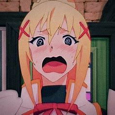

Darkness
Masoquista


Sobre
Como uma cruzada, Darkness inicialmente se apresenta com uma aura de orgulho e nobreza, pregando sobre seu dever de proteger os outros do mal.
Ela fala em um tom de voz muito sério e muitas vezes sai como muito madura.
No entanto, apesar dessas aparências externas, na realidade, seu verdadeiro personagem é o de um completo masoquista.
Embora ela queira proteger os outros, seus impulsos masoquistas são o que, em última análise, a levam a cometer muitos de seus atos "heroicos" ao longo da série, resultando em muitos espectadores vendo-a como um modelo para seu suposto altruísmo.